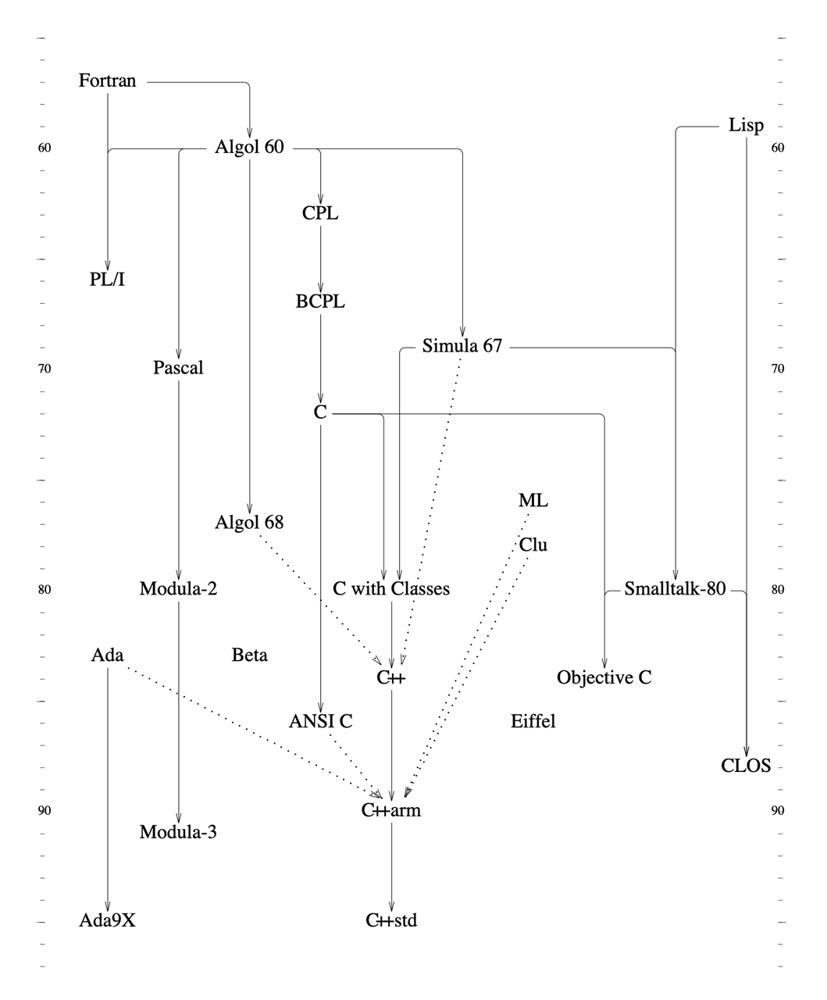

C++：走向现代化#
本文主要内容整理自本贾尼·斯特劳斯特卢普（Bjarne Stroustrup）发表的著作和论文，相关内容参见文末参考资料。
0. 当我们说 C++ 的时候，我们在说什么#
对用户而言，“C++”不只是由标准定义的程序设计言，而是由很多部分组成的集合，不限于：
- 由标准定义的语言规范
- 标准库
- 其它的库
- 大量的（遗留）代码库
- （包括其他语言开发的）工具
- 教学和培训资源
- 社区支持
1. C++ 简史#

C with Classes -> C84 -> Release 1.0(Cfront) -> Release 1.2(Cfront) -> Release 2.0(Cfront) -> ARM -> C++98(std) -> C++03(std) -> C++11(std) -> C++14(std) -> C++17(std) -> C++20(std)
- 1979: Start of work on “C with Classes” that became C++; first non-research user;
- Language:
classes, constructors/destructors,public/private, simple inheritance, function argument type checking - Library:
tasks (coroutines and simulation support),vectorparameterized with macros
- Language:
- 1985: First commercial release of C++; TC++PL1
- Language:
virtualfunctions, operator overloading, references, const - Library:
complexarithmetic, stream I/O
- Language:
- 1989-91: ANSI and ISO standardization start; TC++PL2
- Language: abstract classes, multiple inheritance, exceptions, templates
- Library: iostreams (but no
tasks)
- 1998: C++98, the first ISO C++ standard, TC++PL3
- Language:
namespaces, named casts,bool,dynamic_cast - Library: the STL (containers and algorithms),
string,bitset
- Language:
- 2011: C++11, TC++PL4
- Language: memory model,
auto, range-for,constexpr, lambdas, user-defined literals, ... - Library:
threads and locks,future,unique_ptr,shared_ptr,array, time and clocks, random numbers, unordered containers (hash tables), ...
- Language: memory model,
- 2014: C++14
- Language: generic lambdas, local variables in
constexprfunctions, digit separators, ... - Library: user-defined literals, ...
- Language: generic lambdas, local variables in
- 2017: C++17
- Language: structured bindings, variable templates, template argument deduction from constructors, ...
- Library: file system,
scoped_lock,shared_mutex(reader-writer locks),any,variant,optional,string_view, parallel algorithms, ...
- 2020: C++20
- Language:
concepts,modules, coroutines, three-way comparisons, improved support for compile-time computation, ... - Library: concepts, ranges, dates and time zones,
span, formats, improved concurrency and parallelism support, ...
- Language:
2. 传统 C++ 的设计规则#

2.1. 设计目标（Aims）#
C++ 使认真的人更享受编程的乐趣
C++ makes programming more enjoyable for serious programmers
C++ 是一个通用程序设计语言，它更倾向于系统编程，并且
C++ is a general-purpose programming language with a bias towards systems programming that
- 是更好的 C（is a better C）
- 支持数据抽象（supports data abstraction）
- 支持面向对象编程（supports object-oriented programming）
- 支持泛型编程（supports generic programming）
2.2. 一般性规则（General Rules）#
- C++ 的发展必须由实际问题推动
- 不应被牵涉到无益的对完美的追求中
- C++ 必须是现在就有用的
- 每个特征必须存在一种合理的明显实现方式
- 总是提供一个变通的方法
- C++ 是一种语言，而不是一个完整的系统
一个程序设计环境包含了许多部分，一种方式是将多个部分组合成一个“集成化的”系统，另一种方式是维持系统中各部分之间的经典划分，例如编译器、连接器、语言的运行支持库、I/O库、编辑器、文件系统、数据库，等等。C++遵循的是后一条路。
- 为每种应该支持的风格提供全面支持
- 不试图去强迫人做什么
程序员都是聪明人:)，总能找到方法绕过觉得无法接受的规则和限制。
2.3. 支持设计的规则（Design Support Rules）#
- 支持健全的设计概念
- 为程序的组织提供各种机制
- 直接说出你的意思
允许用语言本身表达所有重要的东西，而不是在注释或者通过宏这类黑客的手段。
- 所有的特征都必须是能负担的
- 允许一个有用的特征比防止各种错误使用更重要
- 支持从分别开发的部分出发进行软件组合
2.4. 语言的技术性规则（Language-Technical Rules）#
- 不隐式地违反静态类型系统
- 为用户定义类型提供与内部类型同样好的支持
- 局部化是好事情
- 避免顺序依赖性
- 如果有疑问，就选择该特征的最容易说清楚的形式
- 语法是重要的（常以某些我们不希望的方式起作用）
- 清除使用预处理程序的必要性
支持Low-Level编程的规则（Low-Level Programming Support Rules）
- 使用传统的（dumb）连接器
好的连接兼容性：容易移植，容易与用其它语言编写的软件互操作。
- 没有无故的与C的不兼容性
- 不为比C++低级的语言保留生存空间（除了汇编）
同时提供低级特征和抽象机制
- 不为不使用的特性付出代价（zero-overhead rule）
- 为存疑的东西提供人工介入的手段
比如模版的特化
3. C++ in 2006#
3.1. 环境的改变#
- 单处理器（单核）性能增长放缓，能效成为关键指标
- 硬件供应商绑定开发语言，平台分立（Smart phone）
- 新老项目都在向更时髦的平台转移
- 学校教学和考试更青睐Java，C++课程教学质量下降
3.2. C++ vs Java & C##
C ++ 基于“程序设计语言与底层操作系统分离”的传统模型，由众多独立工具供应商提供支持。而托管语言往往是专有的，由强大的组织支持。该组织开发庞大的基础架构和库，以供开发者使用。
C++ is based on the traditional model of a programming language separate from the underlying operating system and supported by a multitude of independent tool suppliers. The managed languages tended to be proprietary; only a large and rich organization could develop the massive infrastructure and libraries required.
3.3. Java & C# 的观点#
- 低级（low level）的需求应该由少量的 C 或汇编完成；
- 高级（high level）的需求应该由具有广泛运行时支持的、安全的、带垃圾回收的语言完成，这样更好、更低价、更高效；
- Java 和 C# 这样的托管语言，提供垃圾回收和运行时检查，使专家程序员更高产，也使入门更简单；
- 程序设计语言要和平台深度集成，集成工具集对于构建大型系统和提高生产效率是必不可少的。
3.4. C++ 的劣势#
- 工具链上手门槛高
- 接口灵活性和 ABI 稳定性不可兼得
- C++ 标准委员会具有大组织的通病
4. C++11: It Feels Like a New Language#
支持并发，简化编码（开发），增强泛型编程，静态安全类型扩充，对创建工具库的支持，标准库扩充
4.1. 语言特性#
- 内存模型：基于现代硬件环境，针对并发的高效 low-level 模型
memory model - an efficient low level-model of modern hardware as a foundation for concurrency
auto和decltype：简化类型声明- range-
for：简化范围迭代 - 移动（move）语义和右值引用：减少数据拷贝次数
- 统一的初始化：一致的对象和内置类型的语法（语义）
nullptr：空指针语义（类型和值两方面）constexpr函数：编译期求值函数- 用户定义字面量：用户定义类型的字面量
- 原始字符串字面量：不转义字符
- 属性（attributes）：本质上是关联任意信息和名字
- lambdas：匿名函数对象
- 可变参数模板（variadic
templates）：可以处理不定数量任意类型参数的模板 - 模板别名：重命名，并绑定模板参数
noexcept：担保函数不会抛出异常override和final：用于类继承的语法扩充static_assert：编译期断言long long：更宽的整型- 成员默认初始值：不用通过构造函数初始化列表设置成员默认值
enum classes：带作用域的强类型枚举
4.2. 标准库#
unique_ptr和shared_ptr：实践 RAII 的资源管理指针- 内存模型和原子量（atomic）
thread，mutex，condition_variable：类型安全且可移植的系统级并发支持function，bind：通用函数封装器future，promise，packaged_task：轻量的高级并发工具tuple：匿名的基础复合类型- 类型萃取（type traits）：用于元编程的类型属性识别
- 正则表达式
- 随机数：支持多种生成器和数据分布
- 时间（Time）：
time_point和duration unordered_map等：哈希表forward_list：轻量级链表array：长度可知的固定长度数组- 花括号（emplace）运算：构造容器时避免对象拷贝
exception_ptr：跨线程传递异常
5. C++14: Completing C++11#
ABI稳定，无痛升级
5.1. 语言特性#
- 二进制字面量：
0b1001000011110011 - 数字分隔符：增强可读性，
0b1001’0000’1111’0011 - 变量模板：参数化常量和变量
- 函数返回值类型推导
对 c++11 中 lambda 返回值类型推导的推广
- 泛型lambda
constexpr函数支持局部变量- 移动（move）捕获：
[p = move(ptr)] { /* ... */ }; - 带类型的tuple访问：
x = get<int>(t); - 标准库支持用户定义字面量：
basic_string、duration与complex
6. C++17: Lost at Sea#
新特性很多，但没有重大改进
6.1. 语言特性#
auto [x,y,z] = f(); // call syntax, introducing aliases
inline变量：简化仅头文件的库中具有静态存储期的变量的使用- 折叠表达式：简化变参模板的使用
- 判断（
if、switch和while）语句中的初始化器：类似for语句 - 强制的复制消除：消除一些多余的拷贝运算
- 更严格的求值顺序：防止一些细微的求值顺序错误
auto占位的非类型模板形参：值模板参数类型推导- 捕获通用错误的新属性：
[[maybe_unused]],[[nodiscard]], and[[fallthrough]] - 十六进制浮点字面量
- 编译期的
constexpr if语句：简化编译期求值代码
6.2. 标准库#
optional，variant，any：表示可选值的标准库类型shared_mutex，shared_lock（读写锁），scoped_lock（加多个锁，且不会引发死锁）- 并行STL：标准库算法的多线程和/或向量化版本
- 文件系统：操纵文件系统的路径和目录的可移植方式
string_view：引用（非所属的）不可变字符序列- 数学特殊函数：Laguerre多项式，Legendre多项式，beta函数，黎曼zeta函数
7. C++20: A Struggle for Direction#
继C++11后的又一重大突破
7.1. 主要特性#
- Concepts：specification of requirements for generic code
- Modules：support for modularity for code hygiene and improved compile times
- Coroutines：stackless coroutines
- Compile-time computation support
<=>：a three-way comparison operator- Ranges：a library flexible range abstractions
- Date：a library providing date types, calendar, and time zones
- Span：a library providing efficient and safe access to arrays
- Format：a library providing type-safe printf-like output
- Concurrency增强：such as scoped threads and stop tokens
7.2. 次要特性#
- C99-style designated initializers
- Refinements to lambda capture
- Template parameter lists for generic lambdas
- Initialization of an additional variable within a range-for
- Lambdas in unevaluated contexts
- Pack expansions in lambda capture
- Removing the need for
typenamein some cases - More attributes:
[[likely]]and[[unlikely]] source_locationto give the source code location of a piece of code without the use of macros- Feature test macros
- Conditional
explicit - Signed integers are guaranteed to be two’s complement
- Mathematical constants, such as
piandsqrt2 - Operations on bits, such as rotations and counting ones
8. C++23#
8.1. 开发中的特性#
- Networking and executors
- Contracts：assertions, preconditions, and postconditions
- Static reflection：facilities for generating code based on the surrounding program
- Pattern Matching：selecting code to be executed based on types and object values